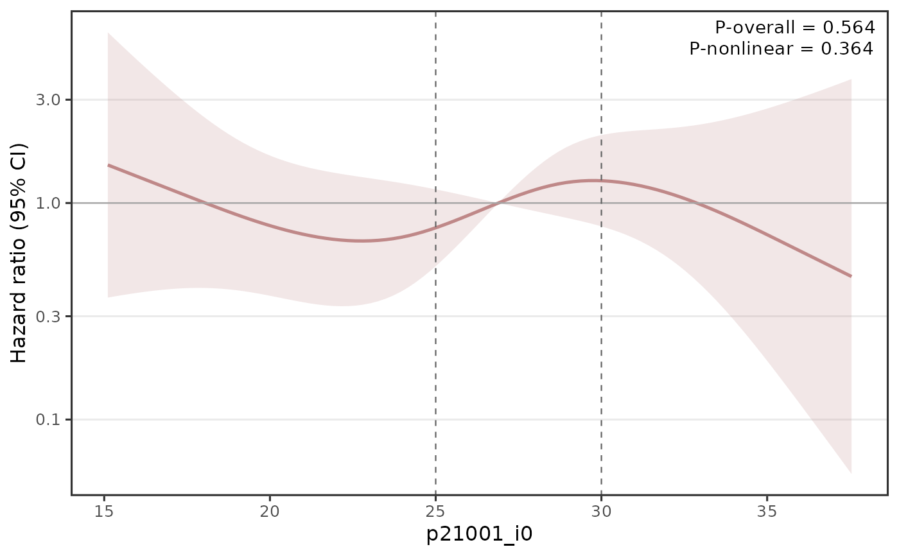

Draws the dose-response curve produced by assoc_rcs: the fitted
effect (hazard ratio, odds ratio, or mean difference) across the range of a
continuous exposure, with a confidence band, relative to the analysis
reference value. When the assoc_rcs result holds more than one
adjustment model, the curves are overlaid and coloured by model.
Usage
plot_rcs(
data,
null_line = TRUE,
vline = NULL,
hline = NULL,
ref_mark = FALSE,
annotate_p = TRUE,
p_pos = c("topright", "topleft", "bottomright", "bottomleft"),
log_y = NULL,
xlab = NULL,
ylab = NULL,
title = NULL,
theme = "default",
palette = NULL,
legend_labs = NULL,
save = FALSE,
dest = NULL,
save_width = 18,
save_height = 16
)Arguments
- data
A
assoc_rcsresult (data.tablecarrying themeasure,ref, andukbflow_callattributes).- null_line
(logical) Draw the null-effect reference line. Default:
TRUE.- vline
(numeric or NULL) Exposure value(s) at which to draw vertical clinical reference lines. Default:
NULL.- hline
(numeric or NULL) Effect value(s) at which to draw horizontal clinical reference lines. Default:
NULL.- ref_mark
(logical) Draw a vertical line at the analysis reference value (the
refattribute). Default:FALSE.- annotate_p
(logical) Annotate
P-overallandP-nonlinear. With multiple models, the most-adjusted model's values are shown (and labelled with the model name). Default:TRUE.- p_pos
(character) Corner for the p-value annotation:
"topright"(default),"topleft","bottomright", or"bottomleft".- log_y
(logical or NULL) Use a log-scaled y-axis.
NULL(default) chooses automatically: log for hazard/odds ratios, linear for a mean difference.- xlab, ylab, title
(character or NULL) Axis labels and title.
NULLuses sensible defaults (exposure name forxlab; measure-basedylab).- theme
(character) Visual preset. Default:
"default".- palette
(character or NULL) Colours for the model curves; overrides the preset palette. Default:
NULL.- legend_labs
(character or NULL) Legend labels for the models. Default:
NULL.- save
(logical) Save the plot to
dest(png/pdf/jpg/tiff). Default:FALSE.- dest
(character or NULL) Output path stem (extension is replaced). Required when
save = TRUE.- save_width, save_height
(numeric) Saved size in centimetres. Defaults:
18x16.
Value
A ggplot object. It is returned visibly, so a bare
plot_rcs(res) call draws the plot; assigning the result suppresses
auto-printing.
Details
The panel uses a clean framed style (full border, light horizontal grid only). Two p-values from the spline fit – overall association and non-linearity – are annotated in a corner.
Reference lines: a null-effect line is drawn automatically (at
1 on the hazard/odds-ratio scale, 0 for a mean difference).
In addition, vline and hline accept user-supplied vectors of
clinically meaningful reference values – vertical lines at exposure values
(e.g. clinical cut-points) and horizontal lines at effect values – drawn as
dashed grey lines, in the spirit of threshold lines on a GWAS plot.
See also
assoc_rcs for the model, plot_survival
and plot_forest for the other visualisations.
Examples
if (requireNamespace("rms", quietly = TRUE) &&
requireNamespace("ggplot2", quietly = TRUE)) {
dt <- ops_toy(scenario = "association", n = 500)
dt <- dt[dm_timing != 1L]
res <- assoc_rcs(dt, "dm_status", "dm_followup_years", "p21001_i0", # BMI
method = "coxph", base = FALSE, covariates = "p22189")
p <- plot_rcs(res, vline = c(25, 30)) # clinical BMI cut-points
plot(p)
}
#> ✔ ops_toy: 500 participants | 33 columns | scenario = "association" | seed = 42
#> ℹ outcome_col dm_status: logical detected, converting TRUE/FALSE -> 1/0
#>
#> ── assoc_rcs ───────────────────────────────────────────────────────────────────
#> ℹ Exposure p21001_i0 | coxph | 4 knots | 1 model | test: lrt
#> ✔ Fully adjusted: p_overall = 0.564, p_nonlinear = 0.364
#> ✔ Done: 1 dose-response curve (100 grid points).
